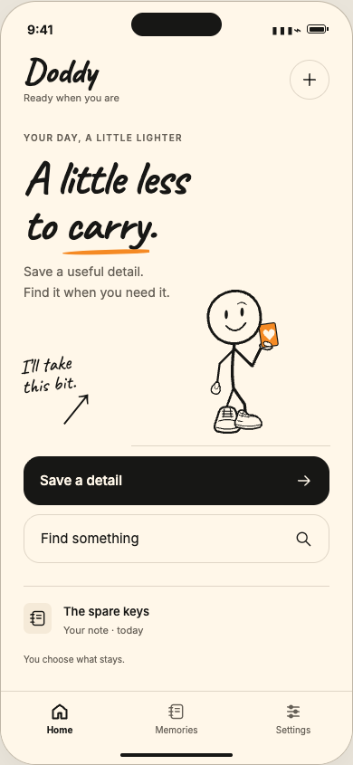
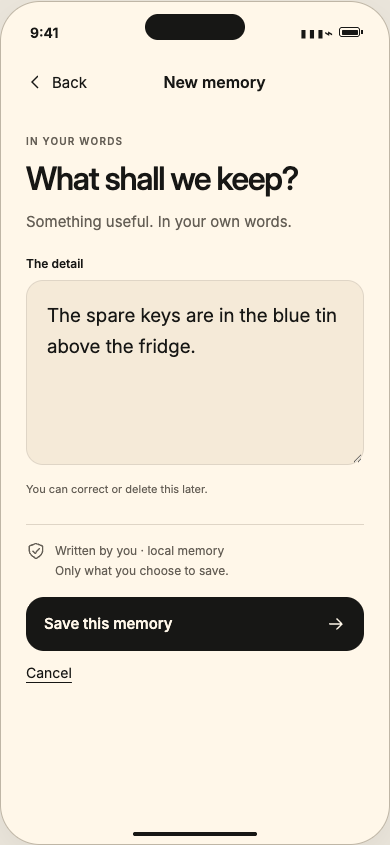
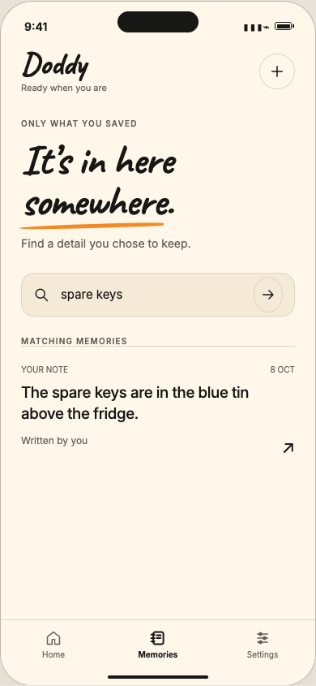
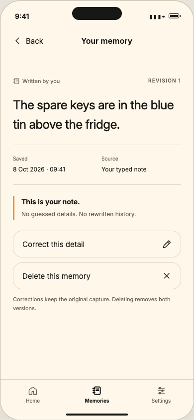
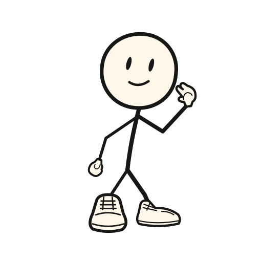

iPhone app, in early testing
A little less to carry.
Doddy is a pocket notebook with a mate inside. Tell it the small stuff you don't want to lose, and get your exact words back when you need them.
Doddy is an AI, not a person. Your notes are stored on your iPhone.


Design preview of the app
One morning in Warsaw.
A short film about Doddy, a ball he never quite puts down, and one very determined pigeon. 1 minute 15, best with sound.
Brand film. A story about Doddy, not a demo of the app.
Small things vanish the moment you need them.
- The parcel locker code
- Which tin the spare keys went in
- The book Marta recommended
- Your kid's shoe size
How it works
Three steps, all on your iPhone. No account, no setup.
-

Tell Doddy
Type it the way you'd say it. Doddy keeps your exact words, with when you saved them and where they came from.
-


Ask later
Search with the words you remember. Doddy shows the notes that match, in your original words, with their date and source.
-


Fix it or forget it
Correct a note and the original stays visible. Export everything, or delete one note or all of them.
Screens are design previews of the app.
Every note keeps its receipt.
Doddy never rewrites what you said. Each note shows when it was saved and where it came from, and a correction is added on top, so the first version is still there.
When nothing matches, Doddy tells you so instead of making something up.

I couldn't find that in your saved memories.
The spare keys are in the red tin above the fridge.
Original, kept as written
The spare keys are in the blue tin above the fridge.

- Connecting…
- Listening
- Thinking…
- Speaking
Save this note?
“Marta's book is The Hobbit.”
Save Don't saveIn testing
Or just say it.
Tap Talk to Doddy and ask out loud. Doddy looks through your notes and answers from what you saved.
Doddy only listens while the voice screen is open, or, if you turn on Hey Doddy, while the Dynamic Island shows it's listening; the wake word is picked out on your iPhone. If you say something worth keeping, Doddy asks first, and nothing is stored until you tap Save.
While you talk, your voice and the notes Doddy looks up are sent to OpenAI to run the conversation, or to ElevenLabs if you switch the voice on the main screen. Voice hasn't been tested on a real iPhone yet.
Your notes, your call.
-
Stored on your iPhone
Notes are stored in the app on your phone, protected by iOS. They leave it only for things you switch on, and the app lists each one under What leaves this iPhone.
-
No account
No sign-up, no email, no password. Open the app and start.
-
Export any time
Take everything with you as JSON or plain text.
-
Delete for real
Delete one note or all of them. They're gone from search straight away.
Doddy is an AI, not a person. Some things you switch on send data off the phone: voice conversations (OpenAI, or ElevenLabs if you switch the voice), phone calls and memory on calls (Doddy's server, Twilio and ElevenLabs), shared lists (your iCloud), and connected accounts like Gmail or Todoist (through Doddy's server). Everything else stays on your iPhone. All of it is in early testing.
Meet Doddy
A hand-drawn mate with an orange backpack, oversized trainers and a basketball that never quite gets put down. Helpful first, funny second, honest always.
-
Always has a side quest going.
-
Notices the small stuff that slows your day.
-
Helps first, chats second.
-

Jokes about the queue, never about you.
Take a shot
Doddy never quite puts the ball down. Press anywhere on the court, pull back and let go to throw. Or let Doddy try.
Remember it
Six small things, twelve cards. Flip two at a time and find the pairs. Doddy is better at this than the rest of us.
Flip two. Find the pair.
Come say hey.
Doddy is in early testing. Leave your email to hear when early access opens.
Want to chat now? Join the Telegram group
Follow Doddy: TikTok doddy_mate Instagram doddy_mate
Already testing Doddy? Open Doddy
Later, maybe
In testing now: your calendar, reminders, alarms, timers, lists, maps and message drafts, with changes confirmed on screen first (quick list edits can be undone instead), and Polish alongside English. Not built yet, and no dates promised: Android.